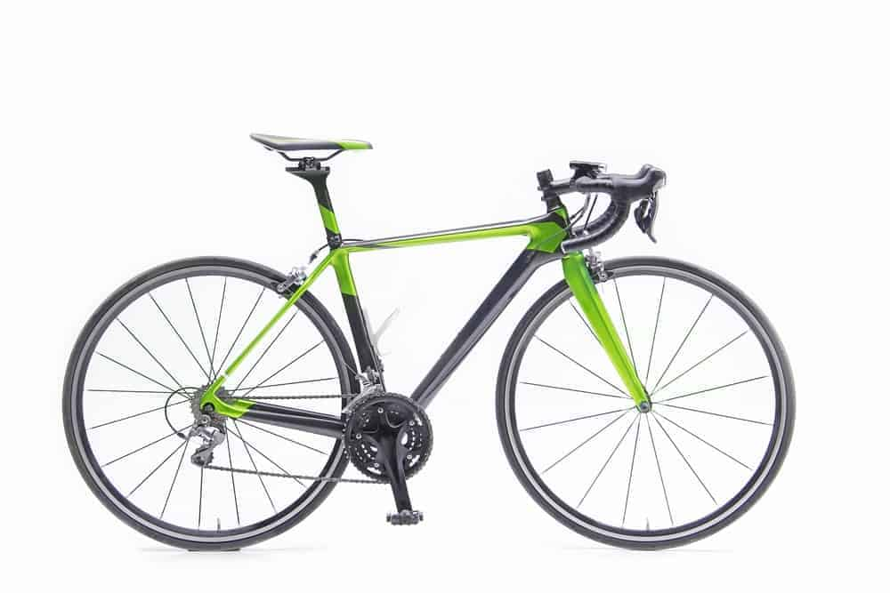
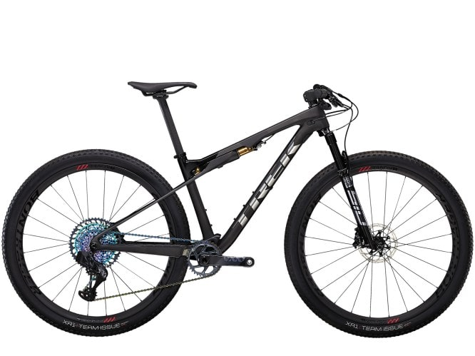
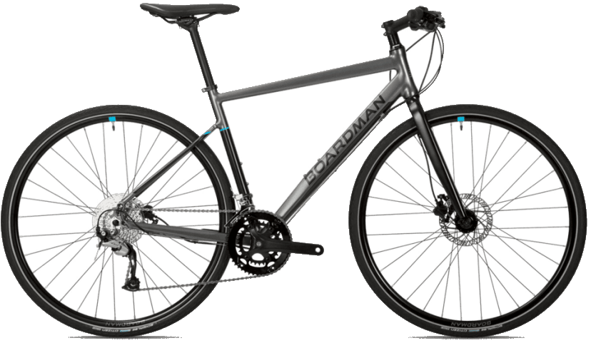
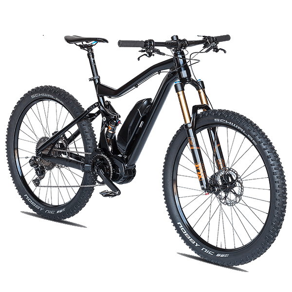

Bicycle Types
The various types of bicycles that are available today.
Road Bike
Mountain Bike
Foldable Bike

Hybrid Bike
E-Bike
Road Bikes
A road bike is personally my favourite type of bike. They are best identified by their drop or turned-down handlebars and skinny tires. The downward-curving handlebars are usually super lightweight that help put you in an aerodynamic position. The lightweight frame makes this type of bicycle particularly good for numerous pavement uses including racing, touring, fitness riding, long-distance rides and daily commuting.
The large, thin tires allow you to glide the bike along various terrains with zero to little effort. If you are supremely concerned about speed, varied options for hand and riding positions, and an efficient transference of energy into propelling the bike forward, a road bike is the best option for you.
Mountain Bikes
This bike is designed with excellent braking systems and shock-absorbing features that can easily handle serious bumps, rocks, dirt trails, roots and ruts. Mountain bikes are meant for dealing with steeper terrain which is why most of them consist of lower gears as compared to most other road bikes.
They usually have 26-inch or 29-inch wide knobby tires that make them function amazingly well over obstacles and in loose dirt. They also consist of rugged components and frames, flat handlebars and suspension in order to assist cyclists in navigating rocky mountain hills.
Foldable Bikes
Folding bikes are believed to be excellent travel companions. As the name suggests, they fold super easily and smoothly, allowing them to be able to effortlessly fit on a boat, in the trunk of a car or on a subway. They can even be folded and carried in a carrying bag which makes them extremely convenient for commuters who have limited storage space at home or elsewhere.
A few overriding features of folding bikes include smaller wheels, with most of them being 20-inches, making it easy for the bike to get over bumps and potholes in order to provide you with a smooth ride. Another great feature is that they have adjustable functions on the folding frame, handlebar and saddle, all which allow an easier folding process. Many also have adjustable latches that help the bike collapse easily.
Hybrid Bikes
Hybrid bikes are best described as a mix of road, mountain and touring bike designs, making them more of “do-it-all” kind of bikes that cater to a wide range of uses. These bikes usually sport a combination of large road bike sized wheels that make them work amazingly well on both paved trails and smooth dirt. They also feature a flat bar and a heads-up ride to ensure better view and comfort while riding.
Many hybrid bikes that are considered as commuter-friendly models include fenders, racks and lighting systems. However, it is important to note that no two hybrid bikes are entirely same so you must choose one according to your requirements and the type of riding you plan on doing.
E-Bikes
These bikes include an electric motor which you can charge by plugging it into a regular outlet. When you peddle, the electric motor provides an assist so that you go faster and hills are made easier.
Many types of bicycles are available in electric versions including mountain bikes, road bikes and hybrid bikes (for commuting).